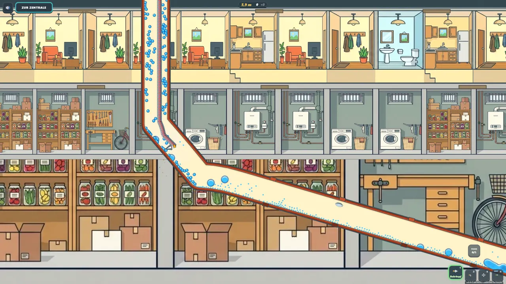
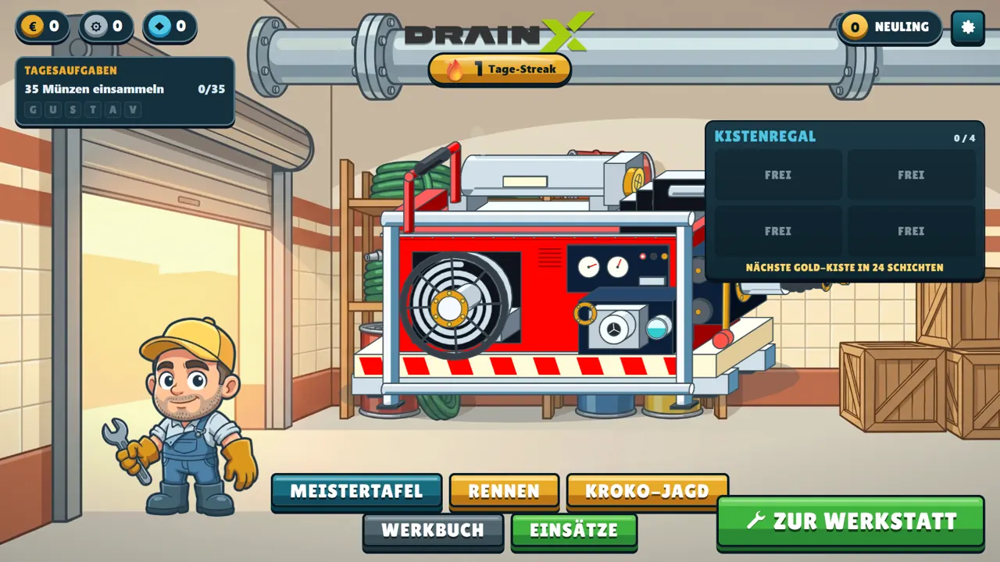
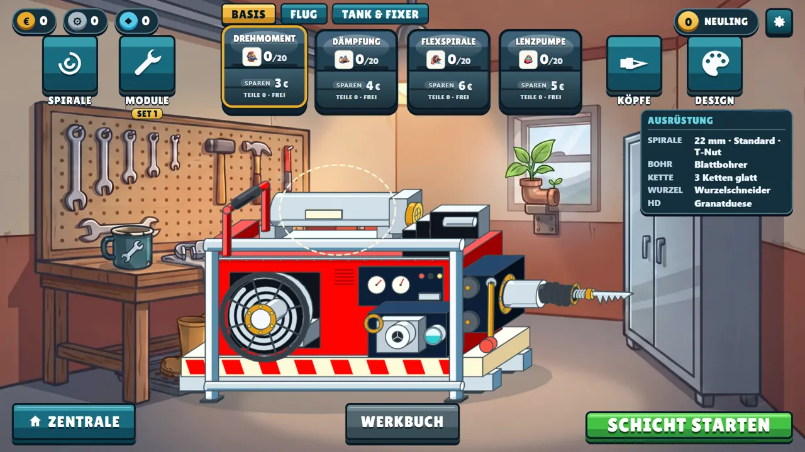
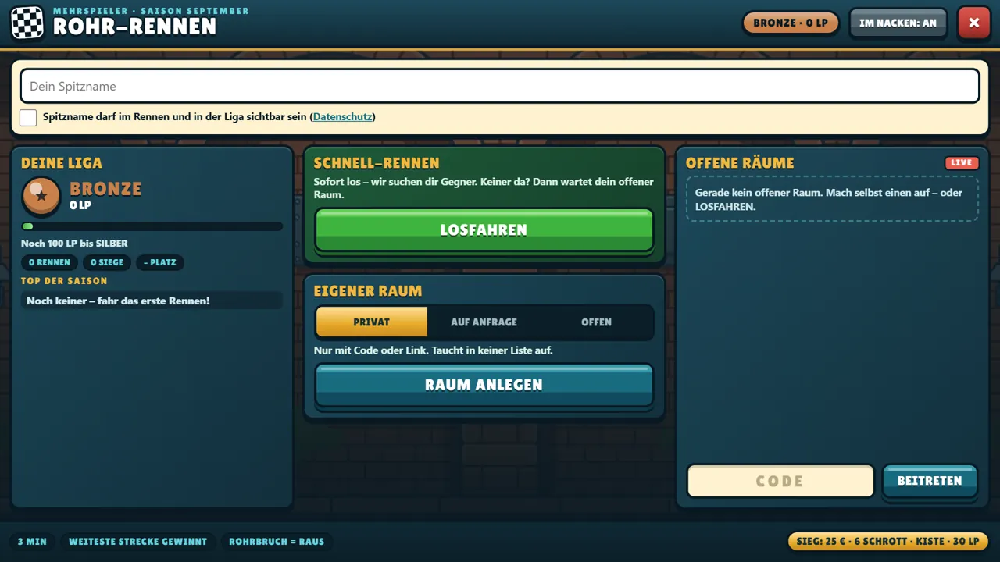

Testphase läuft
Gully Gustav ist in der Testphase und im Browser spielbar – am Handy und am PC. Mit Spitzname und E-Mail anmelden, danach geht es sofort los. Die Android-App folgt im Play Store, eine englische Version auf Spieleportalen.
Fragen oder Fehler gefunden? support@gullygustav.de
Worum geht's?
Echtes Handwerk
Bohrkopf, Kettenschleuder, Hochdruckdüse, Wurzelschneider: Jeder Kopf taugt für etwas anderes. Fett, Feuchttücher, Wurzeln, Kalk und Beton wollen richtig angegangen werden.
Das Wasser wartet nicht
Hinter jeder Verstopfung staut sich das Abwasser. Bist du zu langsam, läuft der Keller voll – und die Schicht ist vorbei.
Werkstatt & Kisten
Rüste deine Maschine aus, baue Module aus Schrott und öffne Feierabend-Kisten. Chancen ansehen
Rohr-Rennen
Fahr live gegen bis zu sieben andere, lade Freunde per Link ein und steig in der Liga von Bronze bis Meister auf.
So sieht's aus




Von echten Rohrreinigern
Gully Gustav kommt von der DrainX GmbH – Rohrreinigung in Hamburg. Die Hindernisse im Spiel stammen aus dem echten Arbeitsalltag: Fettablagerungen unter Küchen, Feuchttücher-Zöpfe, eingewachsene Wurzeln und Urinstein.
Verstopfung im echten Leben? Dafür gibt's die Profis: drainx.de
Presse & Downloads
Pressetext, Bilder und Symbol zum Herunterladen.
Zum Pressebereich